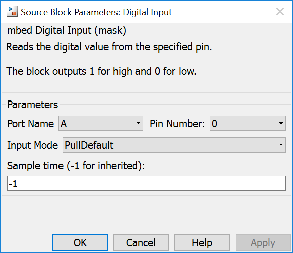
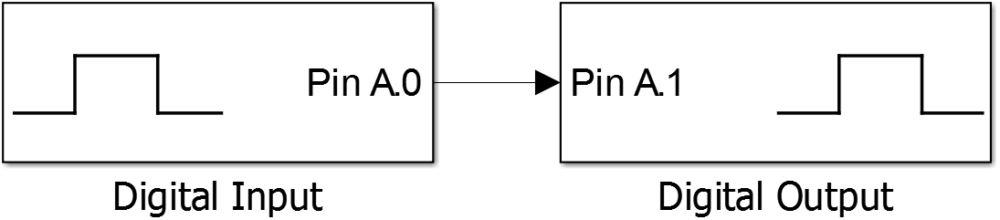

4.1. Digital Input
{kind=link}
4.1.2. Data Type Support
The output port writes values with an uint8 data type.
4.1.3. Parameters Dialog Box
4.1.3.1. Port Name/Pin Number
specify the mcu pin. This block supports the naming schema: ‘P’ + letter ‘A’, ‘B’, ‘C’, … + ‘_’ + number ‘0’, ‘1’, … ‘15’, e.g. PA_0.
4.1.3.2. Input Mode
specifies the pin input mode. The possible values correspond to the values defined in the mbed DigitalIn class: PullDefault, PullUp, PullDown, PullNone
4.1.3.3. Sample Time
specifies the time interval between samples. To inherit the sample time, set this parameter to -1.
4.1.4. Example
In the example an input pin is read in by an Digital Input Block. This vlaue is written to a pin by an Digital Output block.
{kind=link}
4.1.5. Code Generation
Instance names of mbed classes are created by concatenating model name (, submodelnames) and block name (<Model Name>_(<Subblock Name>_…)<Block Name>). Space and minus characters are substituted by underscore (‘_’) characters.
4.1.5.1. Global parts
creates a global instance
DigitalIn <instance name>(P<Port Name>_<Pin Number>);
4.1.5.2. Initialization Function
and a line in void <Model Name>_initialize(void) function
<instance name>.mode(<Input Mode>);
in <Model Name>.cpp.
4.1.5.3. Step Function
creates one line in void <Model Name>_step(void) function
lvalue = ((uint8_T)<instance name>);